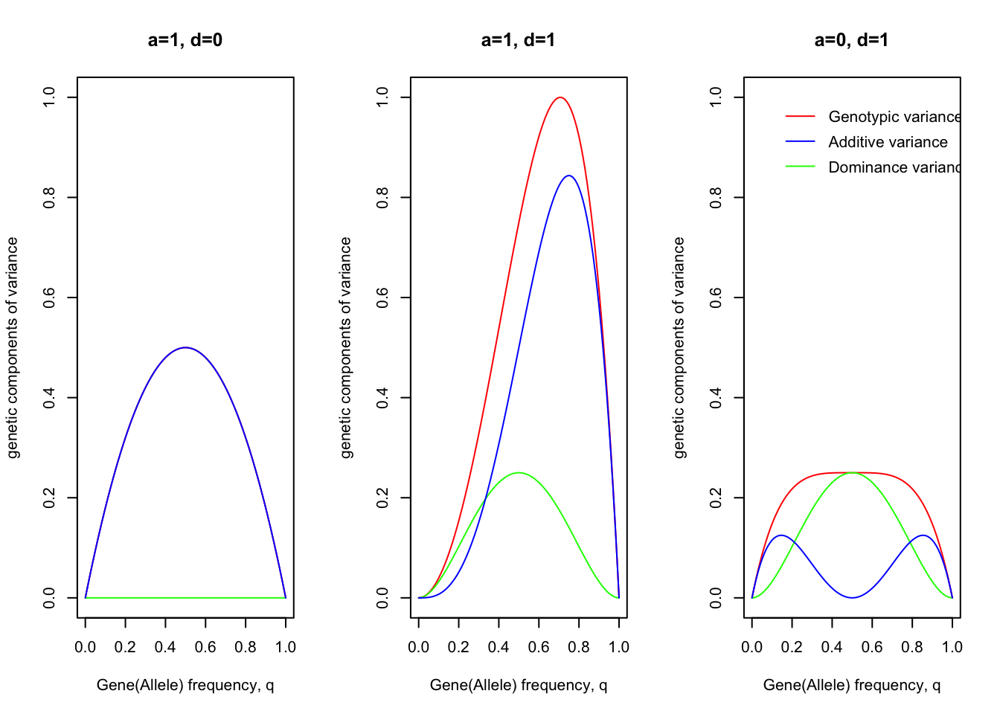

9 Variance
The basic idea in the study of variation is its partitioning into components attributable to different causes.
9.1 Components of variance
The total variance is then, with certain qualifications (条件), the sum of the components, thus:
\[V_P = V_G+V_E = V_A + V_D + V_I + V_E\]
The qualifications:
- Cov(G,E) = 0. If it’s not zero, it will increase \(V_P\) by \(2\times Cov(G,E)\)
- there is no interaction between genotypes and environments.
Table 8.1 Components of variance
| Variance component | Symbol | Value whose variance is measured |
|---|---|---|
| Phenotypic | \(V_P\) | Phenotypic value |
| Genotypic | \(V_G\) | Genotypic value |
| Additive | \(V_A\) | Breeding value |
| Domiance | \(V_D\) | Dominance deviation |
| Interaction | \(V_I\) | Interaction deviation |
| Environmental | \(V_E\) | Environmental deviation |
9.1.1 Components as proportions of the total
The partitioning of the variance into its components allows us to estimate the relative importance of the various determinants of the phenotype, in particular the role of heredity versus environment, or nature and nurture.
The relative importance of heredity in determining phenotypic values is called the heritability of the character.
The ratio \(V_G/V_P\) expresses the extent to which individuals’ phenotypes are determined by the genotypes. This is called the heritability in the broad sense, or the degree of genetic determination. The ratio \(V_A/V_P\) expresses the extent to which phenotypes are determined by the genes transmitted from the parents. This is called the heritability in the narrow sense, or simply the heritability.
The heritability \(V_A/V_P\) determines the degree of resemblance between relatives and is therefore of the greatest importance in breeding programmes. The degree of genetic determination \(V_G/V_P\) is of more theoretical interest than practical importance.
9.1.2 Estimation of the degree of genetic determination, \(V_G/V_P\)
Neither the genotypic nor the environmental components of variance, \(V_G\) and \(V_E\), can be estimated directly from observations on a single populations, but in certain circumstances they can be estimated in experimental populations.
Individuals with identical genotypes can be obtained from a highly inbred line or the \(F_1\) of a cross between two such lines, or from a clone propagated from a single individual. (Identical twins in man and cattle also provide individuals of identical genotype, but their use in partitioning the variance is very limited for reasons to be discussed in Chapter 10.)
9.2 Genetic components of variance
9.2.1 Additive and dominance variance
The information needed to obtain expressions for the variance of breeding values and the variance of dominance deviations was given in the last chapter in Table 7.3. (Note: the expected of breeding values and domiance deviations are both 0.)
The additive variance, which is the vraince of breeding values, is obtained as follows:
\[V_A = p^2 \times (2q\alpha)^2 + 2pq \times ((q-p)\alpha)^2 + q^2 \times (-2p\alpha)^2 = 2pq[a+d(q-p)]^2\]
Similarly, the variance of domiance deviations is
\[V_D = p^2 \times (-2q^2d)^2 + 2pq \times (2pqd)^2 + q^2 \times (-2p^2d)^2 = (2pqd)^2\]
9.2.2 Total genetic variance
So, the genotypic variance is
\[V_G = V_A + V_D = 2pq[a+d(q-p)]^2 + [2pqd]^2\]
Note: cov(A,D) = 0 due to the least square estimation.
va = function(a, d, p){
q = 1 - p
return(2*p*q*(a+d*(q-p))^2)
}
vd = function(a, d, p){
q = 1 - p
return((2*p * q *d)^2)
}
vg = function(a, d, p){
return(va(a,d,p) + vd (a,d,p))
}
p = seq(0,1,0.01); q=1-p
layout(matrix(1:3,1,3))
a=1; d=0
plot(c(0,1),c(0,1),col = "white", main=paste("a=",a,", d=",d,sep=""), xlab="Gene(Allele) frequency, q", ylab="genetic components of variance")
lines(q, vg(a,d,p),col="red")
lines(q, vd(a,d,p),col="green")
lines(q, va(a,d,p),col="blue")
a=1; d=1
plot(c(0,1),c(0,1),col = "white", main=paste("a=",a,", d=",d,sep=""), xlab="Gene(Allele) frequency, q", ylab="genetic components of variance")
lines(q, vg(a,d,p),col="red")
lines(q, vd(a,d,p),col="green")
lines(q, va(a,d,p),col="blue")
a=0; d=1
plot(c(0,1),c(0,1),col = "white", main=paste("a=",a,", d=",d,sep=""), xlab="Gene(Allele) frequency, q", ylab="genetic components of variance")
lines(q, vg(a,d,p),col="red")
lines(q, vd(a,d,p),col="green")
lines(q, va(a,d,p),col="blue")
legend(0.1,1,"Genotypic variance",lty = 1, col ="red", bty="n")
legend(0.1,0.95,"Additive variance",lty = 1, col ="blue", bty="n")
legend(0.1,0.9,"Dominance variance",lty = 1, col ="green", bty="n")
The graphs show the amounts of genotypic, additive, domiance variance arising from a single locus with two alleles, plotted against the gene(allele) frequency in threes cases: 1) no dominance (d=0); 2) complete dominance (d=a); 3) “pure” overdominance.
The general conclusion to be drawn from these graphs is that genes contribute much more variance when at intermediate frequencies than when at high or low frequencies: recessives at low frequency, in particular, contribute very little variance.
9.2.3 Interaction variance
If the genotypes at different loci show epistatic interaction, then the interactions give rise to a component of variance \(V_I\), which is the variance of the interaction deviations.
Theoretical description of the properties of interaction variances rests on its further subdivision into components.
It is first subdivided according to the number of loci involved: two-factor interaction arises from the interaction of two loci, three-factor from three loci, etc. Interactions involving larger numbers of loci contribute so little variance that they can be ignored.
The nxt subdivision of the interaction variance is according to whether the interaction involves breeding values or domiance deviations. There are thus three sorts of two-factor interactions. Interaction between the two breeding values gives rise to additive \(\times\) additive variance, \(V_{AA}\); interaction between the breeding value of one locus and the domiance deviation of the other gives rise to additive \(\times\) domiance variance, \(V_{AD}\); and interaction between the two domiance deviations give rise to domiance \(\times\) domiance variance, \(V_{DD}\).
So,
\[V_I = V_{AA} + V_{AD} + V_{DD} + etc.\]
It is not easy, however, to estimate the amout of variance that it generates, and little is known about its relative importance as a source of variation. Th e experimental evidence is reviewd by Barker (1979). For further details of epistatic interaction, see Cockerham (1954, 1963), Kempthorne (1957), Crow and Kimura (1970).
9.2.4 Variance due to disequilibrium
The disequilibrium when the genotype freuqncies at two or more loci consideered jointly introduces an additional source of genetic variance. For simplicity, consider just tow loci which do not interact in the manner described above. Let G’ and G’‘be genotypic values of individuals with respect to each locus separately, and let G be the genotypic value with respect to both jointly, i.e., G = G’ + G’’. The total genotypic variance caused by the two loci together is then
\[V_G = V_{G'} + V_{G''} + 2 cov(G',G'')\]
9.3 Correlation and interaction between genotype and environment
9.3.1 Correlation
\[V_P = V_G + V_E + 2cov(G,E)\]
9.3.2 Interaction
\[P = G + E + I_{GE}\]
\[V_P = V_G + V_E + 2cov_{GE} + V_{GE}\]
The variance due to interaction is included with the environmental variance estimated from the phenotypic variance of that genotype.
To some extent, the environmental variance is a property of the genotype. But the source of the variation is environmental and not genetic. It is therefore logical, as well as experimentally necessary, to regard any variance due to genotype-environment interaction as being part of the environmental variance included in any estimate of \(V_E\).
9.3.2.1 Environmental sensitivity
Some of the genotype-environment interaction can be ascribed to differences of sensitivity of different genotypes. Then environmental sensitivity of a genotype is also known as its “reaction norm”.
The only way in which environments can be quantified is by the mean performance of all the genotypes. In other words, the measure of an environment is the mean of all genotypes in that environment. This will be called the environmental value.
The variance due to interaction of genotypes with the specific environments is estimated from an analysis of variance, and the amount attributable to differences of sensitivity is obtained from the heterogeneity of regeression slops.
9.4 Environmental variance
Environmental variance, which by definition embraces all variation of non-genetic origin, can have a great variety of causes and its nature depends very much on the character and the organism studied.
- Nutritional（营养因素） and climatic（气候因素） factors
- Maternal effects（母亲因素）
- prenatal influences（出生前影响）
- postnatal influences（出生后影响）
- Error of measurement
9.4.1 Multiple measurements: repeatability
When more than one measurement of the character can be made on each individual, the phenotypic variance can be partitioned into variance within individuals and variance between individuals. This partitioning leads to a ratio of variance components called the repeatability.
- temporal（时间的） repetition
- spatial（空间的） repetition
In order that we may discuss both temporal and spatial repetition together, we shall use the terms special environmental variance, \(V_{Es}\), to refer to the within-individual variance arising from temporary or localized circumstances; and general environmental variance, \(V_{Eg}\), to refer to the environmental variance contributing to the between-individual component and arising from permanent or non-localized circumstances. The ratio of the between-individual component to the total phenotypic variance is the intraclass correlation r. It is the correlation between repeated measurements of the same individual, and is known as the repeatability of the character.
\[V_P = (V_G + V_{Eg}) + V_{Es}\]
\[r = \frac{V_G + V_{Eg}}{V_P}\]
\[\frac{V_{Es}}{V_P} = 1-r\]
It can be seen that the repeatability sets an upper limit to the degree of genetic determination \(V_G/V_P\), and to the heritability \(V_A/V_P\).
9.5 Summary of variance partitioning
Table 8.5 Summary of variance partitioning
| Data needed | Partition made | Ratio estimated |
|---|---|---|
| Resemblance between relatives | \((V_A):(V_{NA} + V_{Eg} + V_{Es})\) | heritability, \(V_A/V_P\) |
| Genetically uniform group | \((V_A + V_{NA}):(V_{Eg} + V_{Es}) = (V_G):(V_E)\) | degree of genetic determination, \(V_G/V_P\) |
| Multiple measurements | \((V_G + V_{Eg}):V_{Es}\) | repeatability (\(V_G+V_{Eg}/V_P\)) |
| All three | \(V_A:V_{NA}:V_{Eg}:V_{Es}\) |